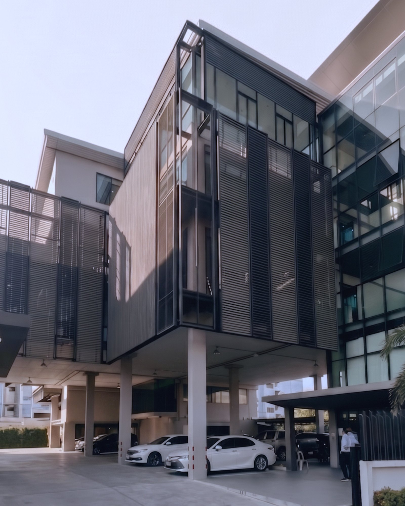
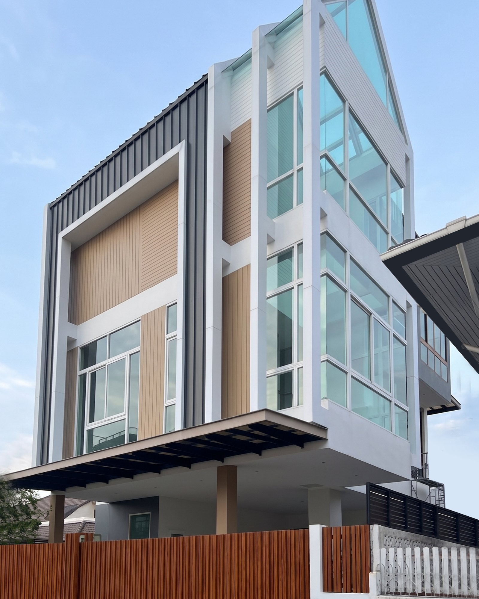
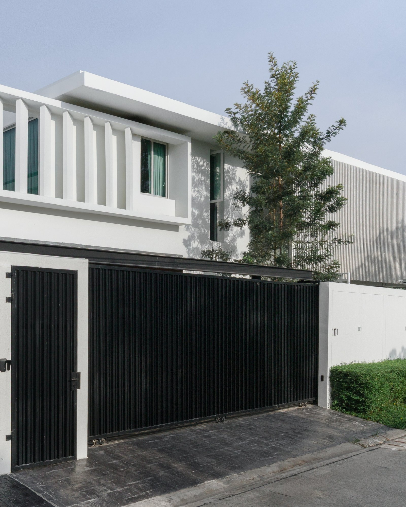

งานฝีมืออยู่ที่รอยต่อ
Ace of Space is a design–build interior studio. We obsess over the smallest seam, because the smallest seam is where a space succeeds or fails.
ออกแบบโดยเริ่มจากสิ่งที่เล็กที่สุด — ระยะ รอยต่อ การจัดวาง และข้อจำกัดตามธรรมชาติของวัสดุแต่ละชนิด เพราะแบบที่ดีไม่ใช่แบบที่สวยบนกระดาษ แต่คือแบบที่สร้างได้จริงโดยไม่ต้องประนีประนอมหน้างาน
เลือกใช้วัสดุคุณภาพสูงสุดในแต่ละหมวด และก่อสร้างด้วยกรรมวิธีดั้งเดิมที่ถูกต้องตามธรรมชาติของวัสดุนั้น ไม่ลดสเปค ไม่ข้ามขั้นตอน ไม่เร่งกระบวนการที่ต้องใช้เวลา — เพราะงานที่ทำถูกตั้งแต่ต้น คืองานที่ไม่ต้องกลับมาแก้
ทีมช่างก่อสร้างที่ทำงานร่วมกันต่อเนื่องกว่า 30 ปี ผ่านงานหลากหลายประเภทและหลากหลายวัสดุ ประสบการณ์นี้คือหลักประกันว่า สิ่งที่เห็นในแบบ คือสิ่งที่จะเกิดขึ้นจริงหน้างาน
จากเส้นแรกบนแบบ ถึงรอยต่อสุดท้ายหน้างาน
We carry every project from design development through construction and handover — one team, one accountability.
เมื่อผู้ออกแบบและผู้ก่อสร้างคือทีมเดียวกัน ความคลาดเคลื่อนจากการสื่อสารระหว่าง interior designer และ contractor จะหายไป งานแก้ที่ไม่จำเป็นลดลง และเจ้าของโครงการไม่ต้องจ่ายให้กับต้นทุนแฝงที่เกิดจากการตีความแบบผิด — สิ่งที่ตกลงกันไว้ในแบบ คือสิ่งที่ได้รับหน้างาน ทั้งงบประมาณและระยะเวลา
Design & Construction
ผลงานที่ผ่านมา — ออกแบบและก่อสร้างโดยทีมเดียวกันทุกตารางเมตร

A workspace built around focus and flow
สำนักงาน เอสดีซี

Northern calm, crafted room by room
รีสอร์ท เชียงราย

A family home tailored to daily rituals
บ้านพักอาศัย บางนา

A house that keeps three generations close
บ้านคุณยาย

Quiet materials for a full-speed city life
บ้านพักอาศัย พระราม 2

A weekend retreat facing the mountain air
บ้านพักตากอากาศ เขาใหญ่